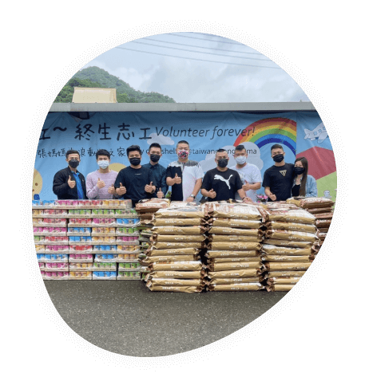
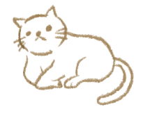
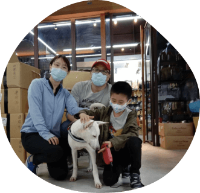
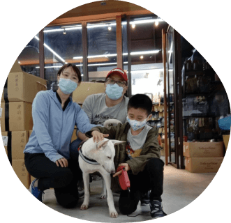

用愛終止流浪
愛牠就是一輩子的陪伴

「浪途」 正式誕生於1994年12月8日當初只為了心中的一個想法，建構出貓狗樂園！
「浪途」 是貓犬中途之家，提供適當救護及照顧給身心遭受危難的牠們，並持續探索與貓犬相處的各種可能。期許在超越種族與語言的交流裡，讓悲劇不再發生。我們初衷始終如一，用心守護毛小孩，直到牠們找到屬於自己溫暖的家庭。




 

我們用心呵護著
浪途 認真對待每一隻浪浪
浪途目前總共有三個照護園區，毛孩數量已多達近5000隻
裡面九成的狗狗來自收容所傷重病犬，一成來自外面救援的傷病癱瘓犬飼料、罐頭是每個月最基本的需求每個月需要3千多包的飼料醫療區體弱病、癱瘓年老的孩子，每個月需要1千多箱的營養罐頭補充體力